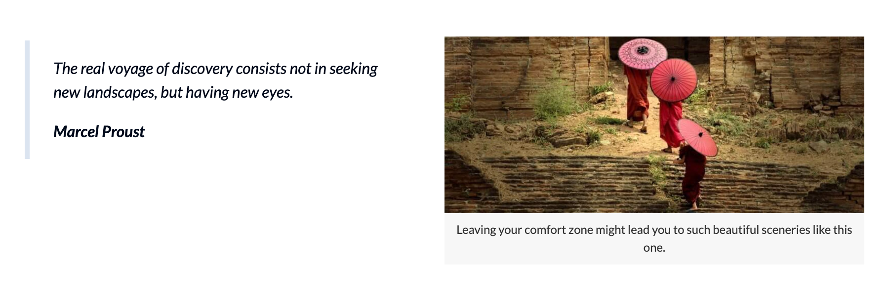

Content styles
We distribute CKEditor 5 with two types of styles:
- Editor styles for the editor’s user interface – see the Editor styles guide.
- Content styles for the content inside the editor – covered in this guide.
If you went through our Quick start, you probably noticed that attaching the styles in JavaScript is pretty standard, and we provide CSS style sheets that have both the editor and content styles combined. There are separate styles for open-source and premium features:
import 'ckeditor5/ckeditor5.css';
import 'ckeditor5-premium-features/ckeditor5-premium-features.css';It is as easy in HTML if you decide to use our CDN:
<link rel="stylesheet" href="https://cdn.ckeditor.com/ckeditor5/49.1.0/ckeditor5.css" />
<link rel="stylesheet" href="https://cdn.ckeditor.com/ckeditor5-premium-features/49.1.0/ckeditor5-premium-features.css" />Some core editor features bring additional CSS to control the look of the content they produce. One such example is the image feature, which requires special content styles to render images and their captions within the content. Another would be the block quote feature that displays quotes in italics with a subtle border on the side. You can see both of these pictured below.

Content inside the editor is styled with native CSS variables, so you can adjust its look without touching the source styles.
If the editor runs inside a shadow root, load the style sheets into that root and override the variables on the shadow host instead of :root. See the Shadow DOM guide for details.
CKEditor 5 provides CSS variables to standardize font and line height styling across the content. These variables control the default appearance of text in the content. You can override them in the following way:
:root {
/* Override the default font family */
--ck-content-font-family: "Roboto";
/* Override the default font size */
--ck-content-font-size: 16px;
/* Override the default font color */
--ck-content-font-color: hsl(225, 5%, 45.00%);
/* Override the default line height */
--ck-content-line-height: 2;
}The general content CSS variables are listed in the table below. Each defaults to the value shown.
| Variable | Controls | Default |
|---|---|---|
--ck-content-font-family | Content font family | Helvetica, Arial, Tahoma, Verdana, Sans-Serif |
--ck-content-font-size | Content font size | medium |
--ck-content-font-color | Content text color | #000 |
--ck-content-line-height | Content line height | 1.5 |
--ck-content-word-break | Word breaking | normal |
--ck-content-overflow-wrap | Wrapping of long words | break-word |
Individual features also provide CSS variables for their specific styling needs. For example, to recolor the mentions’ background and text:
:root {
--ck-content-mention-background: black;
--ck-content-mention-text-color: white;
}The content CSS variables are grouped by feature in the table below. Each defaults to the value shown; override it on :root (or on the shadow host when using the Shadow DOM) to restyle the published content.
| Variable | Controls | Default |
|---|---|---|
| Block quote | ||
--ck-content-block-quote-border-color | Side border color | hsl(213, 40%, 90%) |
--ck-content-block-quote-border-width | Side border thickness | 5px |
--ck-content-block-quote-border-style | Side border style | solid |
| Code block | ||
--ck-content-code-block-text-color | Text color | hsl(0, 0%, 20.8%) |
--ck-content-code-block-background | Background | hsl(0, 0%, 96%) |
--ck-content-code-block-border-color | Border color | hsl(213, 40%, 90.2%) |
--ck-content-code-block-border-width | Border thickness | 1px |
--ck-content-code-block-border-style | Border style | solid |
--ck-content-code-block-border-radius | Corner radius | 2px |
| Inline code | ||
--ck-content-inline-code-background-color | Background | hsla(0, 0%, 78%, 0.3) |
| Font size | ||
--ck-content-font-size-tiny | "Tiny" font size | 0.7em |
--ck-content-font-size-small | "Small" font size | 0.85em |
--ck-content-font-size-big | "Big" font size | 1.4em |
--ck-content-font-size-huge | "Huge" font size | 1.8em |
| Horizontal line | ||
--ck-content-horizontal-line-background | Line color | hsl(213, 40%, 90.2%) |
| Image | ||
--ck-content-image-caption-background-color | Caption background | hsl(0, 0%, 97%) |
--ck-content-image-caption-text-color | Caption text color | hsl(0, 0%, 20%) |
--ck-content-image-style-spacing | Spacing around styled block images | 1.5em |
--ck-content-inline-image-style-spacing | Spacing around styled inline images | calc(var(--ck-content-image-style-spacing) / 2) |
| Media embed | ||
--ck-content-media-style-spacing | Spacing around styled media | 1.5em |
| Table | ||
--ck-content-table-border-color | Outer border color | hsl(0, 0%, 70%) |
--ck-content-table-border-width | Outer border thickness | 1px |
--ck-content-table-border-style | Outer border style | double |
--ck-content-table-cell-border-color | Cell border color | hsl(0, 0%, 75%) |
--ck-content-table-cell-border-width | Cell border thickness | 1px |
--ck-content-table-cell-border-style | Cell border style | solid |
--ck-content-table-header-background | Header cell background | hsla(0, 0%, 0%, 5%) |
--ck-content-table-caption-background-color | Caption background | hsl(0, 0%, 97%) |
--ck-content-table-caption-text-color | Caption text color | hsl(0, 0%, 20%) |
--ck-content-table-style-spacing | Spacing around styled tables | 1.5em |
| Mention | ||
--ck-content-mention-background | Mention background | hsla(341, 100%, 30%, 0.1) |
--ck-content-mention-text-color | Mention text color | hsl(341, 100%, 30%) |
| Highlight | ||
--ck-content-highlight-marker-yellow | Yellow marker | hsl(60, 97%, 73%) |
--ck-content-highlight-marker-green | Green marker | hsl(120, 93%, 68%) |
--ck-content-highlight-marker-pink | Pink marker | hsl(345, 96%, 73%) |
--ck-content-highlight-marker-blue | Blue marker | hsl(201, 97%, 72%) |
--ck-content-highlight-pen-red | Red pen | hsl(0, 85%, 49%) |
--ck-content-highlight-pen-green | Green pen | hsl(112, 100%, 27%) |
| Page break | ||
--ck-content-page-break-line-color | Line color | hsl(0, 0%, 77%) |
--ck-content-page-break-line-width | Line thickness | 2px |
--ck-content-page-break-line-style | Line style | dashed |
--ck-content-page-break-label-text-color | Label text color | hsl(0, 0%, 20%) |
--ck-content-page-break-label-background | Label background | hsl(0, 0%, 100%) |
--ck-content-page-break-label-border-color | Label border color | hsl(0, 0%, 77%) |
--ck-content-page-break-label-border-width | Label border thickness | 1px |
--ck-content-page-break-label-border-style | Label border style | solid |
--ck-content-page-break-label-shadow-color | Label shadow color | hsla(0, 0%, 0%, 0.15) |
| To-do list | ||
--ck-content-todo-list-checkmark-size | Checkbox size | 16px |
--ck-content-todo-list-checkmark-border-color | Checkbox border color | hsl(0, 0%, 20%) |
--ck-content-todo-list-checkmark-checked-background | Checked background | hsl(126, 64%, 41%) |
--ck-content-todo-list-checkmark-checked-border-color | Checked border color | hsl(126, 64%, 41%) |
--ck-content-todo-list-checkmark-tick-border-color | Tick mark color | hsl(0, 0%, 100%) |
| List marker | ||
--ck-content-list-marker-color | Marker color | var(--ck-content-font-color) |
--ck-content-list-marker-font-family | Marker font family | var(--ck-content-font-family) |
--ck-content-list-marker-font-size | Marker font size | var(--ck-content-font-size) |
The table caption, image caption, and mention variables were renamed in v49.x to follow a single naming convention. The former --ck-content-color-table-caption-*, --ck-content-color-image-caption-*, and --ck-content-color-mention-* names still work as fallbacks but are deprecated. See the Update to v49.x guide.
The defaults of these renamed variables are still declared under the former names, so the new names work as override points only. If your own CSS reads one of them with var() and you have not set it, the value is empty. Set the variable first, or read the former name to get the default.
Your application is typically divided into two areas. Content creation, which hosts the editor and is a writing tool, and content publishing, which presents the written content.
It is important to use the content styles on the publishing side of your application. Otherwise, the content will look different in the editor and for your end users.
There are two ways to obtain the content styles:
- From the
npmpackages, in thedist/ckeditor5-content.cssandckeditor5-premium-features-content.csslocation. - From our CDN,
https://cdn.ckeditor.com/ckeditor5/
Below is an example with placeholder paths showing how to load the ckeditor5-content.css (and ckeditor5-premium-features-content.css, if needed) file on the publishing side.
<link rel="stylesheet" href="path/to/assets/ckeditor5-content.css">
<link rel="stylesheet" href="path/to/assets/ckeditor5-premium-features-content.css">
<link rel="stylesheet" href="path/to/assets/styles.css">The final setup depends on how your application is structured. As mentioned earlier, you can use our CDN, or your JS bundler already creates and serves combined style sheets. Choose the solution that works best for your case.
If you take a closer look at the content styles, you may notice they are prefixed with the .ck-content class selector. This narrows their scope when used in CKEditor 5 so they do not affect the rest of the application. To use them in the front–end, you will have to add the ck-content CSS class to the container of your content. Otherwise, the styles will not be applied.
The ckeditor5 package distributes three style sheets:
ckeditor5.css– combined editor and content styles,ckeditor5-content.css– only content styles,ckeditor5-editor.css– only editor styles.
The same is true for the ckeditor5-premium-features package, but the filenames are different:
ckeditor5-premium-features.css– combined editor and content styles,ckeditor5-premium-features-content.css– only content styles,ckeditor5-premium-features-editor.css– only editor styles.
However, these style sheets include styles for all editor plugins. If you want to optimize the size of the style sheet, to only include styles for the plugins you use, you can follow the Optimizing build size guide.